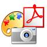

| 1. Если Вы впервые слышите о Linux. |
|
Linux ("Линукс") - это современная операционная система, создаваемая независимыми разработчиками по всему миру.
Под управлением Linux работают самые разные электронные системы - начиная от обычных персональных компьютеров, ноутбуков и
заканчивая многопроцессорными промышленными серверами, кластерными вычислительными комплексами, PDA и даже наручными часами от компании IBM. |
2. Почему стоит использовать Linux? |
|
Вы можете использовать Linux совершенно бесплатно. В каждый дистрибутив Linux входит огромное количество программ, которых хватит практически на все случаи жизни
обычного пользователя. После установки системы Вам не понадобится приносить горы дисков с дополнительными программами и устанавливать каждую из них. |
|
Linux - это очень безопасная система. Для Linux НЕТ вирусов. Все антивирусные программы под Linux - серверные и предназначены для отлова Windows-вирусов, живущих на Windows-машинах.
Даже если бы вирусы под Linux и существовали, сама организация работы в Linux, предусматривающая четкое разграничение прав пользователей и программ,
не оставила бы им возможности навредить системе. |

|
Linux - это большой выбор хорошо знакомого софта и/или его близких аналогов - редакторов, электронных таблиц, броузеров, почтовых клиентов, интернет-педжеров (типа ICQ),
программ работы с графикой, музыкальных и видеопроигрывателей и т.п. Со списком аналогов Windows-программ, имеющихся в Linux, можно ознакомиться
здесь. |
|
Linux долгое время был системой для профессионалов IT. Как следствие, администратор Linux - это востребованная рабочая специальность.
Практически в любой серьезной IT-компании, от небольшого провайдера, районной сети и заканчивая крупными банками, используются системы под управлением Linux.
Если Вы освоили Linux на профессиональном уровне, у Вас появляется еще одна отличная возможность устроиться на высокооплачиваемую работу. |
3. О Linux-библиотеке. |
|
Сайт, с которым Вы работаете сейчас - это сборник различных информационных материалов,
составленный пользователями Linux и распространяемый на некоммерческой основе.
Составители сборника не претендуют на полноту изложения, материалы предлагаются "как есть".
Подробнее о проекте и условиях распространения материалов можно прочитать здесь. |
4. Как пользоваться Linux-библиотекой. |
|
Все статьи сгруппированы с помощью единого рубрикатора, охватывающего различные случаи использования Linux/BSD и сопутствующего программного обеспечения.
Кроме того, имеются специальные разделы "Книги и руководства" и "HOWTO" (Этот раздел содержит конкретные рецепты настройки и использования программы).
Еще один раздел содержит наиболее важные материалы на английском языке по данным темам. |
5. Куда обращаться с вопросами. |
|
Если в процессе работы с Linux у Вас возникнут вопросы (а это вполне возможно, ничего страшного) - обращайтесь на крупнейший российский интернет-форум по Linux -
http://www.linuxforum.ru/ и задайте вопрос в нужном разделе. Линуксоиды охотно помогают друг другу при работе с любимой системой. |